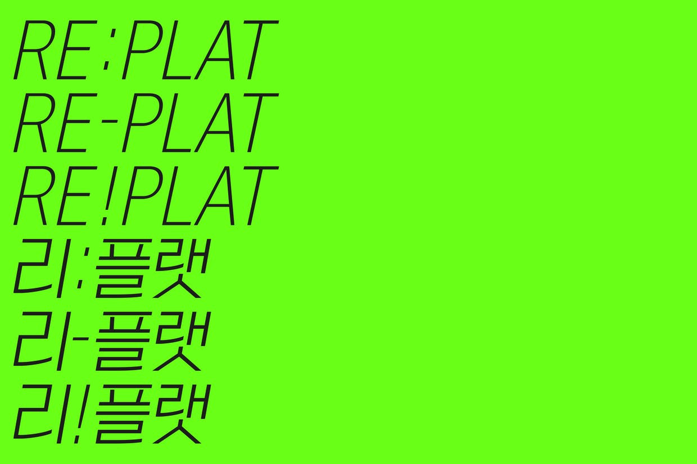
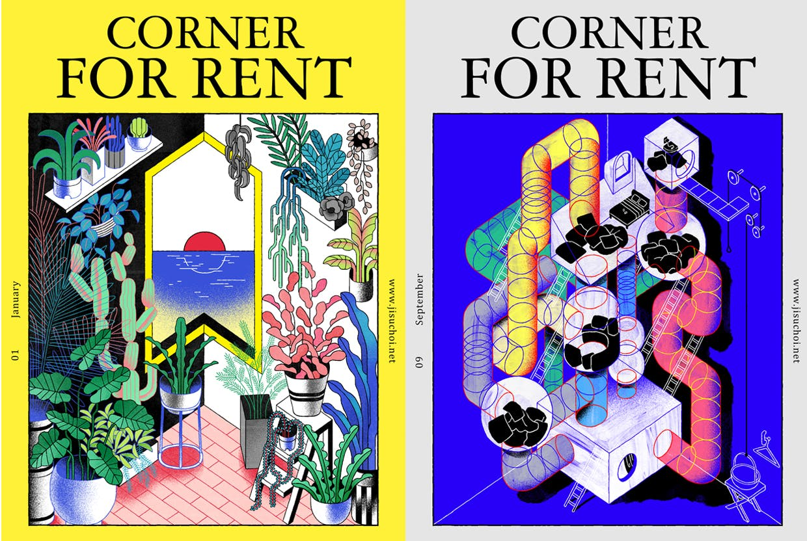
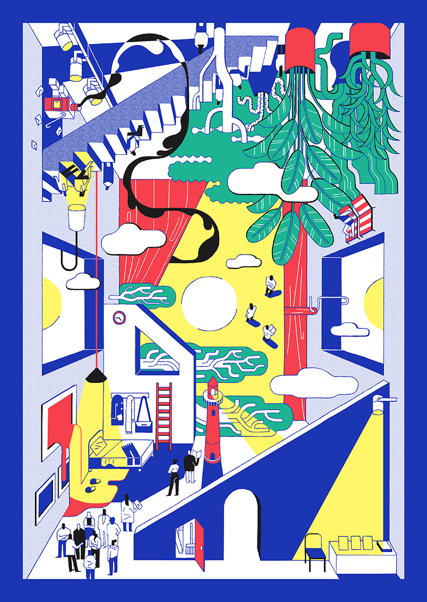
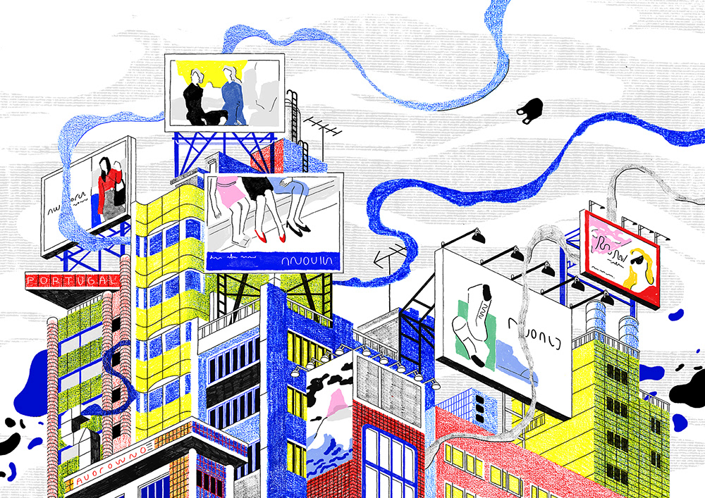
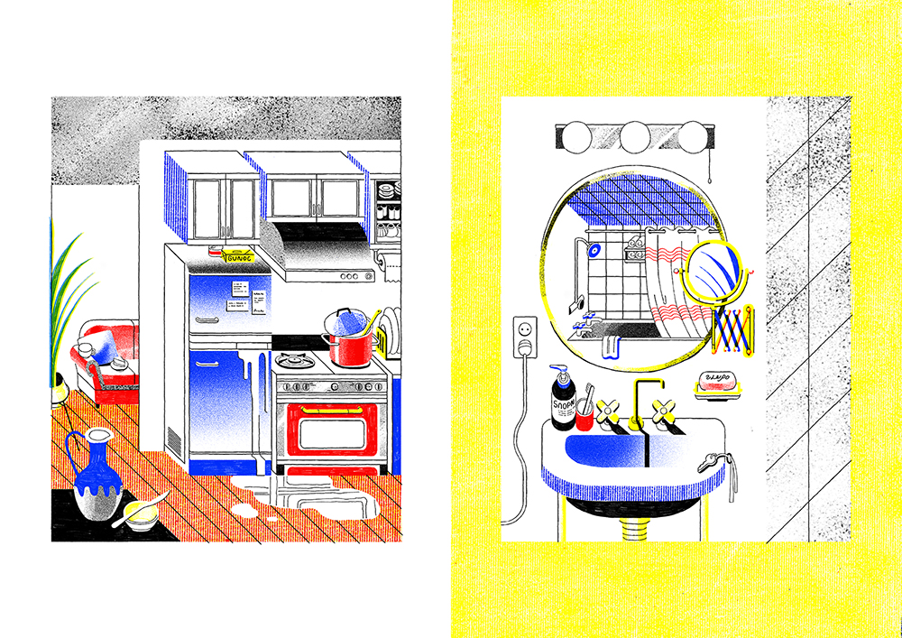

Corner
사람이 사라진 도시는 거추장스러운 그림자를 덜어내고, 선명한 색과 구조를 보여준다. 2021, by 최지수

Inspiration
빛과 영감, 2021, by 최지수

Light
불은 흔적을 남기지 않는다, 2021, by 최지수
The Place
여행에서 만나는 낯선 풍경과 일상, 2021, by 최지수

Blank
바람과 햇볕을 위해 비워둔 길 사이로 소문이 움직인 행적을 따라간다. 2020, by 최지수

Corner For Rent
긴장감과 기대감, by 최지수

Sunrise, Korea
Amazing Places To Watch the Sunrise 2020, by 최지수

The City
안개 낀 새벽, 2020, by 최지수

Peaceful Place
‘공간’과 ‘대칭’, 2021, by 최지수